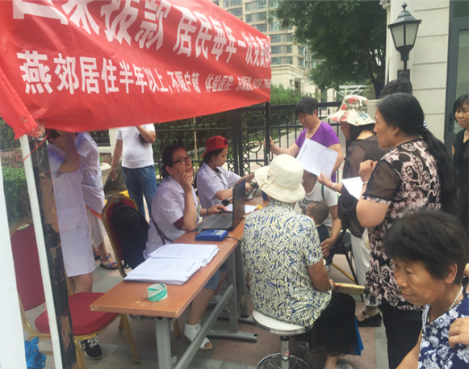
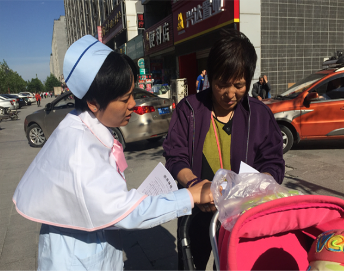
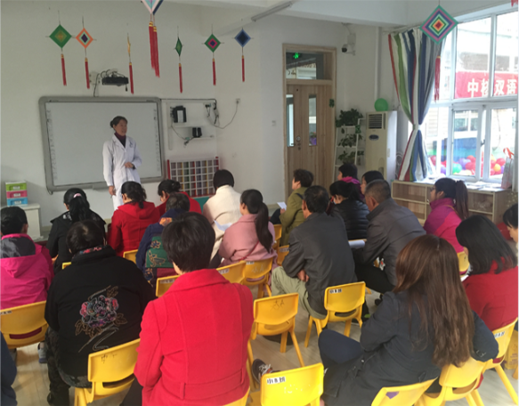

三河市行宫东大街社区卫生服务中心
三河市行宫东大街卫生服务中心位于燕郊开发区神威北大街497号，是燕郊地区最大的社区卫生服务中心，承担着为燕郊广大居民提供公共卫生医疗服务的职能，集医疗、预防、保健、康复、健康教育及计划生育指导为一体的非营利性医疗机构，也是三河市城乡居民医疗保险、职工医疗保险定点报销单位。
中心设有全科诊室、预防接种中心、儿童保健中心、妇女保健中心、皮肤健康管理中心、体检中心、妇科、产科、儿科、内外科、中医科、中医骨科、康复科、耳鼻喉科、眼科、口腔科、中医皮肤科等。中心还配备有高端数字化X光、CR影像系统、四维彩超、CT机、骨密度仪器、全自动化生化检验设备。
为当好辖区居民的健康守门人，我中心下设社区卫生服务站，开展家庭医生服务签约模式、远程医疗会诊、慢病追踪管理、医疗上门服务、信息化系统管理等特色项目。为辖区50多万居民提供更健康、便捷的医疗服务。我中心立足基层、服务大众，设备先进、技术力量精湛、环境优美、收费价格亲民，已经成为周边居民和社会大众选择健康服务的首选医疗机构。
